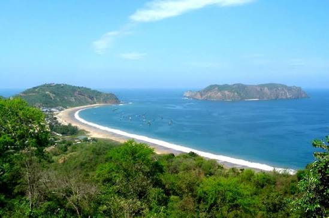
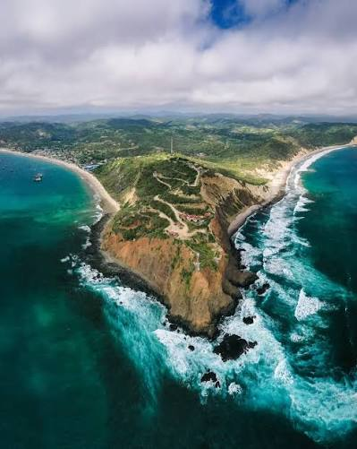

Playa de Puerto López
Una playa ubicada frente al centro de Puerto López, ideal para disfrutar del mar, caminar por la costa y conocer el ambiente local.
Descubre algunos de los lugares más interesantes que puedes visitar en Puerto López y sus alrededores.
Una playa ubicada frente al centro de Puerto López, ideal para disfrutar del mar, caminar por la costa y conocer el ambiente local.

Es uno de los principales atractivos naturales de la zona. Se puede visitar mediante excursiones marítimas desde Puerto López.

Una playa reconocida por sus paisajes naturales, aguas tranquilas y entorno protegido dentro del Parque Nacional Machalilla.

Área natural protegida que conserva playas, bosques y diferentes especies de flora y fauna.

Comunidad ubicada dentro del Parque Nacional Machalilla, conocida por su cultura, historia y atractivos naturales.

Una localidad cercana a Puerto López donde se puede disfrutar de la playa, conocer su cultura y degustar diferentes platos de la gastronomía manabita.
Elige tu próximo destino y prepárate para disfrutar de la naturaleza y las playas de Manabí.
Reservar una experiencia